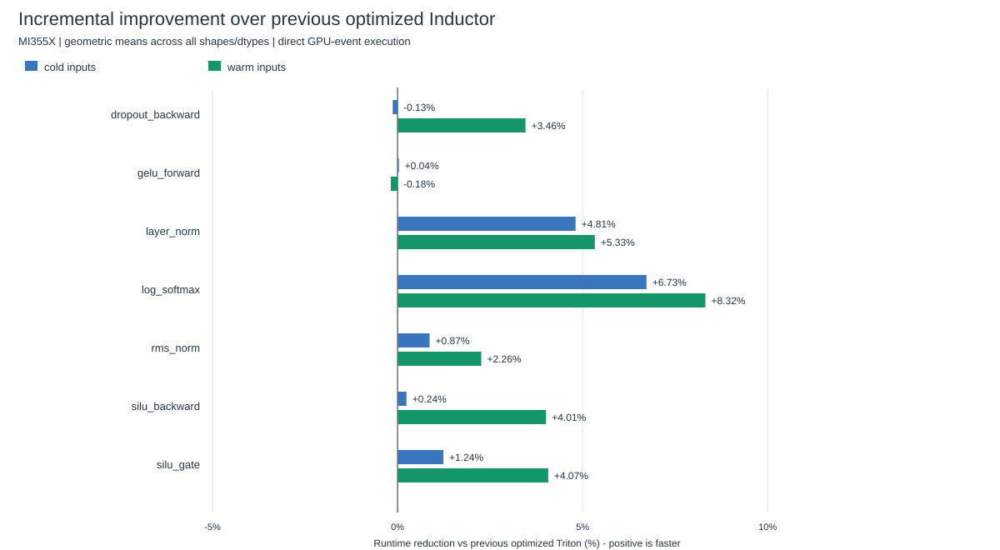

The retained changes add guarded layouts for flat dropout/SiLU fusions, native-like layout search seeds, persistent alternatives for wider inner reductions, and balanced cache-context tuning. All are opt-in on gfx950. Existing math functions are retained; approximate math is disabled in this comparison.
Three iterations were tested: generic layouts, balanced cache selection with wider persistent reductions, and additional vector-width-one seeds. GELU-forward layouts showed no useful aggregate gain and were rejected; GELU forward is retained as a control. Unsupported operations keep the existing path.
Each case rotates regular Triton, previous optimized Triton (extension disabled), extended optimized Triton, and FlyDSL in the same process. The chart compares against the previous optimized path, so it isolates the additional changes. Negative values are regressions.

| Operation | Cases | Runtime saved vs regular Triton | vs previous optimized Triton | vs FlyDSL |
|---|---|---|---|---|
| dropout_backward | 8 | +3.94% | +3.46% | +3.62% |
| gelu_forward | 8 | +2.56% | -0.18% | -1.81% |
| layer_norm | 10 | +18.13% | +5.33% | +0.92% |
| log_softmax | 10 | +8.02% | +8.32% | -1.21% |
| rms_norm | 10 | +3.64% | +2.26% | +2.55% |
| silu_backward | 8 | +6.01% | +4.01% | +0.10% |
| silu_gate | 8 | +5.63% | +4.07% | -1.21% |
62 new cases: graphs, raw data and regressions | Per-case comparisons CSV | Per-operation summary CSV
18 recorded model/kernel geometries: regression comparison | Reference comparisons CSV
One MI355X and one compiler thread. Fifteen rotating rounds, five invocations per sample; separate cold/warm inputs and direct/CUDA graph replay. Mandatory mutation restores and 256 MiB cache flushes occur before GPU events. Three accuracy seeds. ATen GEMM/convolution. Input-restoration can warm mutable buffers in either context. FlyDSL competition is disabled, but unsupported operations may still fall back.
These are kernel/operation-graph timings, not new full-model training throughput or convergence results. Wider-sweep regressions remain visible. The best measured configuration in a bounded search is not proof of global optimality. Compilation overhead is reported separately. Asynchronous overlay workers and lint remain unvalidated; spin is absent from the existing environment.
Validation and source hashes | Incremental code patch | Full branch patch | Large-offset variance accuracy probes
Branch flydsl/triton-hillclimb; all changes remain uncommitted. The v14 source snapshot is retained in v14_source/, and the accepted v15 execution sources in accepted_source/.